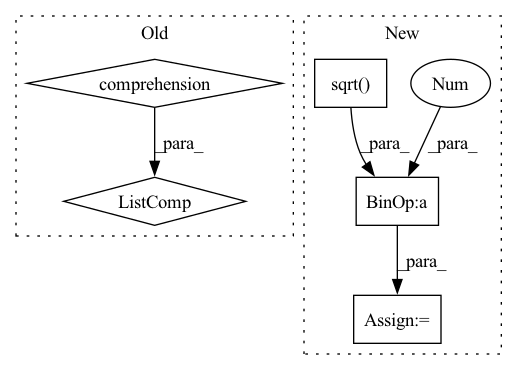

Pattern ID :1027

Before Change
// * kernel: [batch_size, particle_num, particle_num]
kernel_mean = kernel.mean(-1).max(-1)[0]
scale_list = list(np.linspace(min_scale, max_scale, kernel_num))
bandwidth_list = [(kernel_mean * scale).view(-1, 1, 1).detach() for scale in scale_list]
return bandwidth_list
After Change
set1_centre = set1.mean(-1).view(-1, 1)
set2_centre = set2.mean(-1).view(1, -1)
distance = (set1_centre - set2_centre).pow(2).pow(0.5).max(-1)[0].max(-1)[0]
delta_list = [distance / np.sqrt(2 * (i + 1)) for i in range(kernel_num)]
bandwidth_list = [((2 * delta ** 2)).detach() for delta in delta_list]
return bandwidth_list
In pattern: SUPERPATTERN
Frequency: 3
Non-data size: 5
Instances
Fragment ID: 5075733
Project Name: deligentfool/dqn_zoo
Commit Name: 23f02caeca29f856c16efb0b1f26b0bfbf15efe9
Time: 2020-10-28
Author: 1027660817@qq.com
File Name: MMD_DQN/mmd_dqn.py
M Class Name: AnonimousClass
N Class Name: AnonimousClass
M Method Name: calc_bandwidth(3)
N Method Name: calc_bandwidth(4)
M Parent Class:
N Parent Class:
M File Name: MMD_DQN/mmd_dqn.py
N File Name: MMD_DQN/mmd_dqn.py
M Start Line: 10
M End Line: 14
N Start Line: 32
N End Line: 39
'>
Before Change
return eigvals, eigvecs
def _two_view_evp(self, views):
R = [pca.transform(view) for pca, view in zip(self.principal_components, views)]
C = np.cov(R[1], R[0],rowvar=False) @ np.cov(R[0], R[1],rowvar=False)
return C, None
def _multi_view_evp(self, views):
After Change
def _two_view_evp(self, R):
self.R_12 = R[0].T @ R[1]
M = (
np.diag(1 / np.sqrt(self.Bs[1]))
@ self.R_12.T
@ np.diag(1 / self.Bs[0])
@ self.R_12
'>
Fragment ID: 5075732
Project Name: jameschapman19/cca_zoo
Commit Name: 9fe305f936767095fc791f2161092d03a00c5893
Time: 2022-10-21
Author: james.chapman.19@ucl.ac.uk
File Name: cca_zoo/models/_rcca.py
M Class Name: rCCA
N Class Name: rCCA
M Method Name: _two_view_evp(2)
N Method Name: _two_view_evp(2)
M Parent Class: _BaseCCA
N Parent Class: _BaseCCA
M File Name: cca_zoo/models/_rcca.py
N File Name: cca_zoo/models/_rcca.py
M Start Line: 136
M End Line: 137
N Start Line: 140
N End Line: 147
'>
Before Change
@staticmethod
def make_body(n_resblocks, n_feats, expansion):
mid_feats = int(n_feats*expansion)
m_body = [
ResBlock(n_feats, mid_feats)
for i in range(n_resblocks)
]
return nn.Sequential(*m_body)
@staticmethod
def make_tail(n_colors, n_feats, scale):
After Change
expected_variance = 1.0
m_body = []
for i in range(n_resblocks):
in_scale = 1.0/math.sqrt(expected_variance)
m_body.append(ResBlock(n_feats, mid_feats, in_scale, out_scale))
expected_variance += out_scale ** 2
return nn.Sequential(*m_body)
'>
Fragment ID: 5075730
Project Name: coloquinte/torchsr
Commit Name: eb00033f099346d72b412cf00e9291e4e2ee5738
Time: 2021-04-17
Author: gabriel.gouvine_GIT@gmx.com
File Name: models/ninasr.py
M Class Name: NinaSR
N Class Name: NinaSR
M Method Name: make_body(3)
N Method Name: make_body(3)
M Parent Class: nn.Module
N Parent Class: nn.Module
M File Name: models/ninasr.py
N File Name: models/ninasr.py
M Start Line: 95
M End Line: 99
N Start Line: 100
N End Line: 108